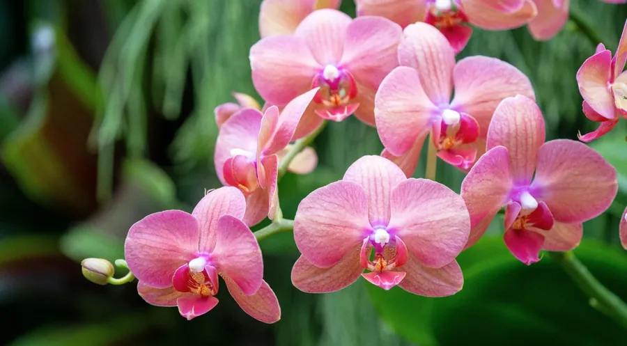

🌸 Conhecendo as orquídeas!
As orquídeas são conhecidas pelas flores delicadas e cheias de detalhes. Existem milhares de espécies, com formatos e cores bem diferentes.

🌸 O que a orquídea gosta?
Antes de conhecer melhor essa planta, descubra duas coisas importantes para cuidar dela:
Água
Muitas orquídeas de casa gostam que as raízes sequem um pouco entre uma rega e outra. Água parada nas raízes pode prejudicá-las.
Luz
A maioria prefere luz clara, sem sol forte direto nas folhas. A necessidade varia de acordo com a espécie.
Importante: orquídea não é plantada em terra comum! Muitas vivem em casca de árvore, musgo ou substratos próprios, que deixam as raízes respirarem.
🌸 O que torna uma orquídea especial?
As orquídeas formam uma das maiores famílias de plantas com flores. Muitas crescem sobre árvores, nas florestas, sem prejudicá-las.
Flores únicas
As flores de orquídea têm formatos incríveis, e muitas duram semanas.
Vivem sobre árvores
Muitas espécies crescem apoiadas em troncos, e usam as raízes para se segurar.
Raízes que respiram
As raízes de muitas orquídeas gostam de ar. Elas ficam expostas e costumam ser grossas e prateadas.
🔎 Detetive das orquídeas!
Toque nos tópicos para descobrir mais sobre elas.
🌳 Elas machucam as árvores?
Não. Orquídeas epífitas só se apoiam nas árvores para ficarem em lugares mais altos e com mais luz.
🥢 Por que as raízes ficam para fora?
Muitas orquídeas têm raízes que gostam de ar. Elas podem ficar prateadas quando secas e ficam esverdeadas depois da rega.
⏳ Por que ela demora para florir?
Muitas orquídeas florescem em épocas específicas e precisam de luz, cuidados e tempo. Cada espécie tem seu ritmo.
🍂 As flores caíram, e agora?
É normal! A planta pode estar descansando. Com bons cuidados, muitas orquídeas voltam a florescer.
🪴 Como cuidar de uma orquídea?
Cada orquídea tem seus detalhes, mas alguns cuidados valem para muitas delas.
Luz clara, sem sol forte
Procure um lugar bem claro. O sol forte direto pode queimar as folhas.
Regue na medida
Deixe a água escorrer e não deixe o vaso com água parada. Espere o substrato secar um pouco antes da próxima rega.
Use substrato próprio
Casca de árvore e outros materiais para orquídeas deixam as raízes respirarem melhor do que terra comum.
Observe as raízes
Raízes firmes e saudáveis são um bom sinal. Raízes moles e escuras podem indicar excesso de água.
🧠 E agora, pequeno jardineiro?
Imagine que você tem uma orquídea em um vaso sem furos. A água fica parada no fundo e as raízes parecem moles. O que isso pode significar?
Qual é o principal cuidado?
Descobrir a resposta
💡 Água parada pode prejudicar as raízes da orquídea. É importante que o vaso deixe a água escorrer.
Peça ajuda a um adulto para trocar para um vaso adequado e observar as raízes.
💡 Você sabia?
Existem orquídeas cuja flor se parece com um bichinho, como abelhas ou macacos! Isso ajuda a atrair os visitantes certos.
E o Meu PlantAmigo?
O Meu PlantAmigo acompanha a umidade do solo. Para uma orquídea, isso ajuda a evitar o excesso de rega, já que as raízes costumam preferir secar um pouco entre uma rega e outra.
🌸 Você virou especialista em orquídeas!
Agora que você descobriu os segredos dessas plantas, teste seus conhecimentos no quiz.
Fazer o quiz